2023 Higher Chemistry - Paper 1 questions
Source: Scottish Qualifications Authority (SQA) / Qualifications Scotland. This is a StemInteract HTML companion, not an official HTML edition. Selectable text is supplied alongside original page images. Use the images or original PDF for equations, powers, fractions, vector notation, tables and diagrams; text extraction cannot fully preserve mathematical layout.
Jump to a question
PDF page 1
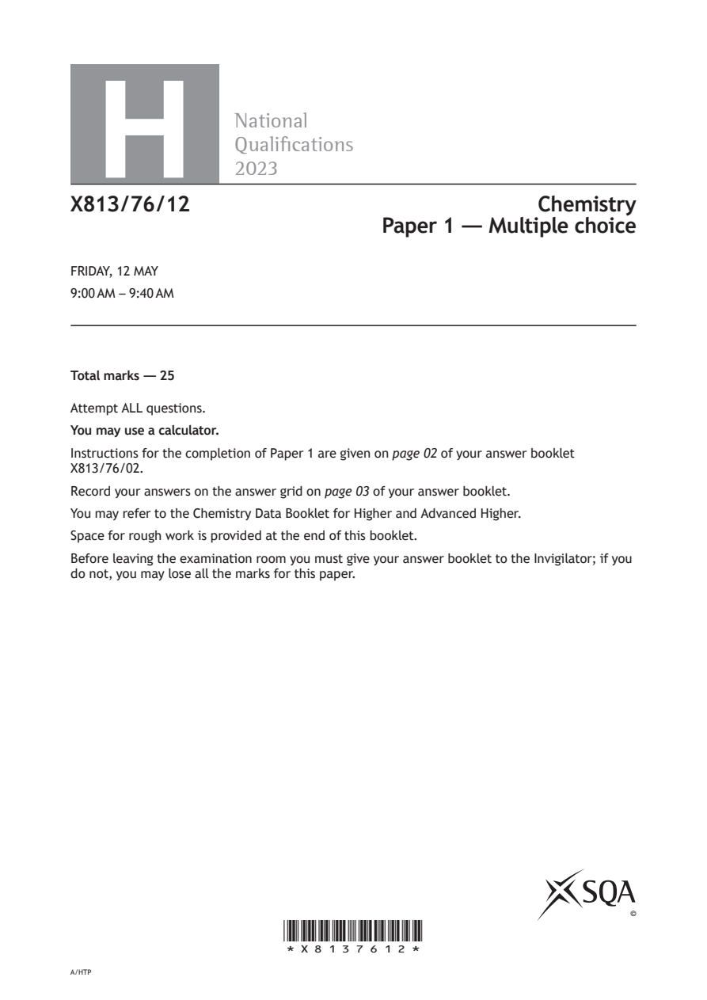
Selectable page text
H
National
Qualications
2023
X813/76/12 Chemistry
Paper 1 — Multiple choice
FRIDAY, 12 MAY
9:00 AM – 9:40 AM
Total marks — 25
Attempt ALL questions.
You may use a calculator.
Instructions for the completion of Paper 1 are given on page 02 of your answer booklet
X813/76/02.
Record your answers on the answer grid on page 03 of your answer booklet.
You may refer to the Chemistry Data Booklet for Higher and Advanced Higher.
Space for rough work is provided at the end of this booklet.
Before leaving the examination room you must give your answer booklet to the Invigilator; if you
do not, you may lose all the marks for this paper.
©
*X8137612*
A/HTPPDF page 2
Paper 1, Question 1Paper 1, Question 2Paper 1, Question 3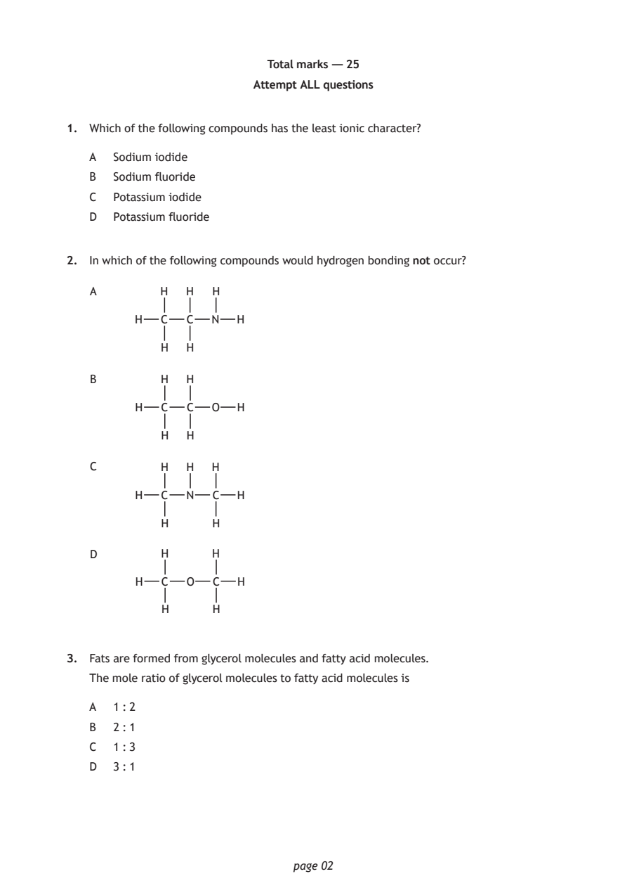
Selectable page text
Total marks — 25
Attempt ALL questions
1. Which of the following compounds has the least ionic character?
A Sodium iodide
B Sodium fluoride
C Potassium iodide
D Potassium fluoride
2. In which of the following compounds would hydrogen bonding not occur?
A H H H
H C C N H
H H
B H H
H C C O H
H H
C H H H
H C N C H
H H
D H H
H C O C H
H H
3. Fats are formed from glycerol molecules and fatty acid molecules.
The mole ratio of glycerol molecules to fatty acid molecules is
A 1 : 2
B 2 : 1
C 1 : 3
D 3 : 1
page 02PDF page 3
Paper 1, Question 4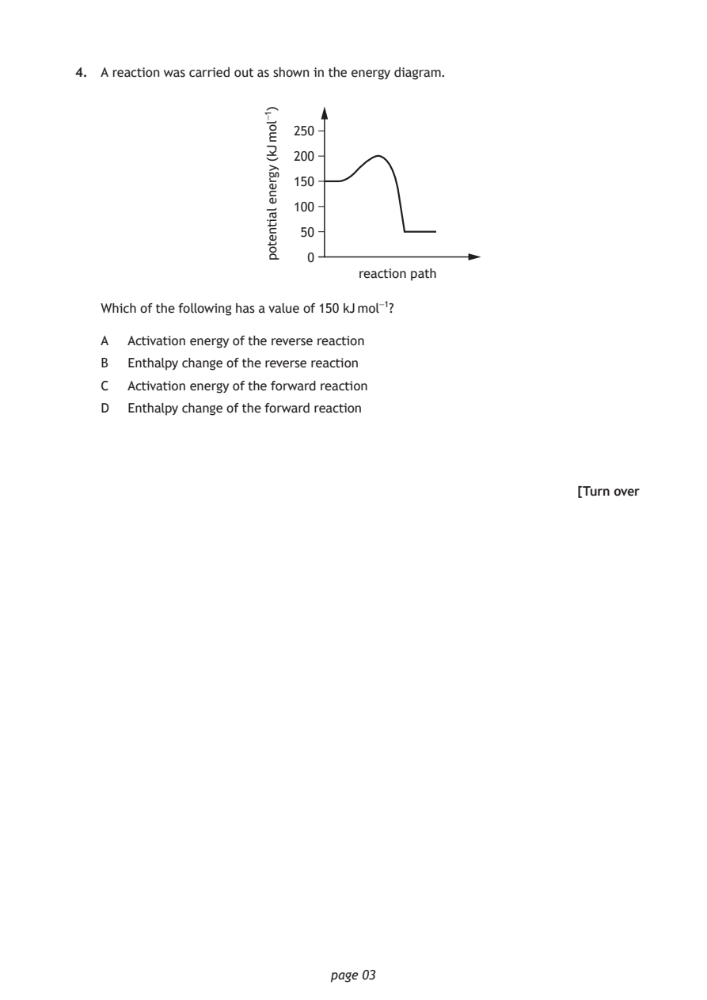
Selectable page text
4. A reaction was carried out as shown in the energy diagram.
reaction path
page 03
)1-lom
Jk(
ygrene
laitnetop
250
200
150
100
50
0
Which of the following has a value of 150 kJ mol⁻¹?
A Activation energy of the reverse reaction
B Enthalpy change of the reverse reaction
C Activation energy of the forward reaction
D Enthalpy change of the forward reaction
[Turn overPDF page 4
Paper 1, Question 5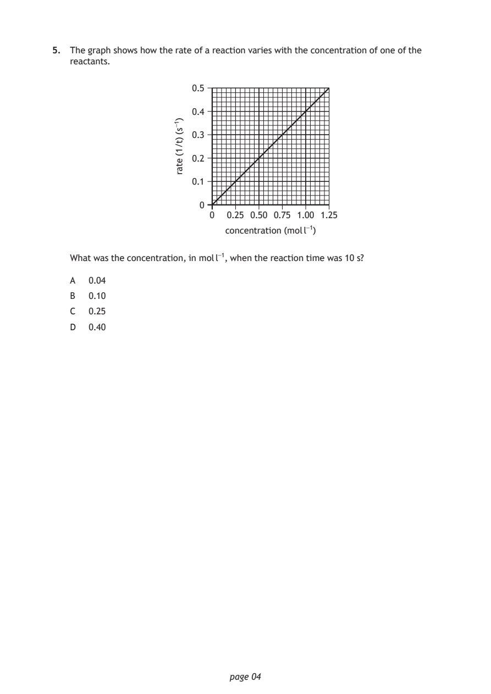
Selectable page text
5. The graph shows how the rate of a reaction varies with the concentration of one of the
reactants.
0.5
0.4
0.3
0.2
0.1
0
0 0.25 0.50 0.75 1.00 1.25
concentration (mol l⁻¹)
page 04
)1-s(
)t/1(
etar
What was the concentration, in mol l⁻¹, when the reaction time was 10 s?
A 0.04
B 0.10
C 0.25
D 0.40PDF page 5
Paper 1, Question 6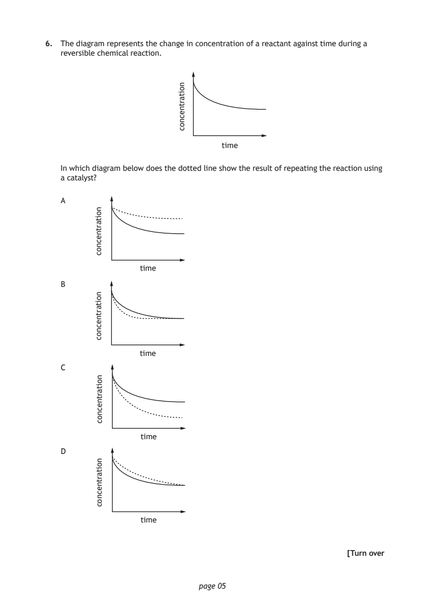
Selectable page text
6. The diagram represents the change in concentration of a reactant against time during a
reversible chemical reaction.
time
page 05
noitartnecnoc
In which diagram below does the dotted line show the result of repeating the reaction using
a catalyst?
A
time
B
time
C
time
D
time
noitartnecnoc
noitartnecnoc
noitartnecnoc
noitartnecnoc
[Turn overPDF page 6
Paper 1, Question 7Paper 1, Question 8Paper 1, Question 9Paper 1, Question 10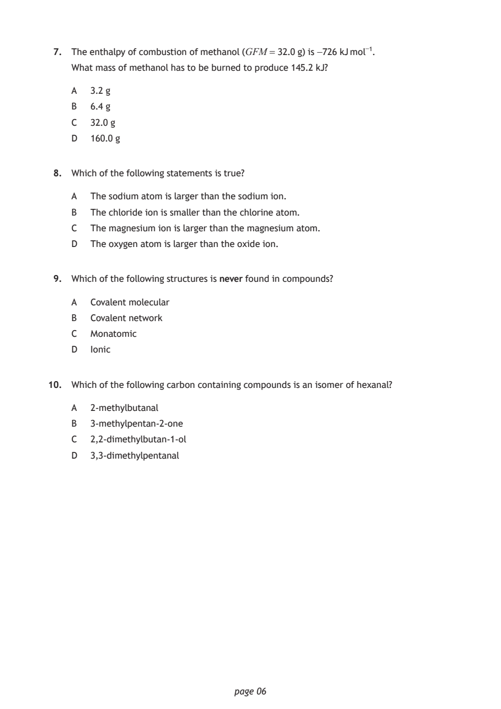
Selectable page text
7. The enthalpy of combustion of methanol (GFM = 32.0 g) is -726 kJ mol⁻¹.
What mass of methanol has to be burned to produce 145.2 kJ?
A 3.2 g
B 6.4 g
C 32.0 g
D 160.0 g
8. Which of the following statements is true?
A The sodium atom is larger than the sodium ion.
B The chloride ion is smaller than the chlorine atom.
C The magnesium ion is larger than the magnesium atom.
D The oxygen atom is larger than the oxide ion.
9. Which of the following structures is never found in compounds?
A Covalent molecular
B Covalent network
C Monatomic
D Ionic
10. Which of the following carbon containing compounds is an isomer of hexanal?
A 2-methylbutanal
B 3-methylpentan-2-one
C 2,2-dimethylbutan-1-ol
D 3,3-dimethylpentanal
page 06PDF page 7
Paper 1, Question 11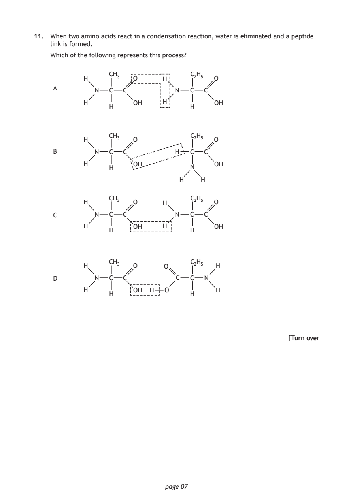
Selectable page text
11. When two amino acids react in a condensation reaction, water is eliminated and a peptide
link is formed.
Which of the following represents this process?
CH₃ C₂H₅
H O H O
A
N C C N C C
H OH H OH
H H
CH₃ C₂H₅
H O O
B N C C H C C
H OH OH
H N
H H
CH₃ C₂H₅
H O H O
C N C C N C C
H OH H OH
H H
CH₃ C₂H₅
H O O H
D N C C C C N
H OH H O H
H H
[Turn over
page 07PDF page 8
Paper 1, Question 12Paper 1, Question 13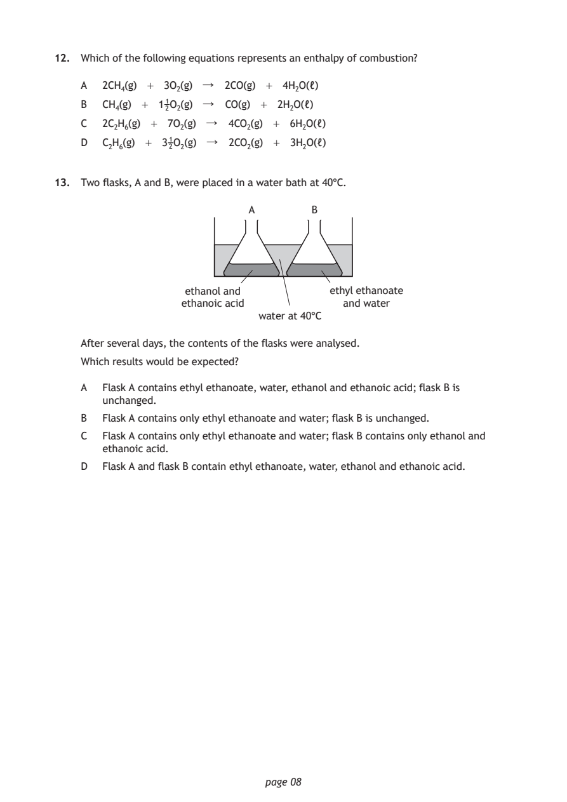
Selectable page text
12. Which of the following equations represents an enthalpy of combustion?
A 2CH₄(g) + 3O₂(g) ↓ 2CO(g) + 4H₂O(ℓ)
B CH₄(g) + 1₂¹O₂(g) ↓ CO(g) + 2H₂O(ℓ)
C 2C₂H₆(g) + 7O₂(g) ↓ 4CO₂(g) + 6H₂O(ℓ)
D C₂H₆(g) + 3₂¹O₂(g) ↓ 2CO₂(g) + 3H₂O(ℓ)
13. Two flasks, A and B, were placed in a water bath at 40°C.
A B
ethanol and ethyl ethanoate
ethanoic acid and water
water at 40°C
After several days, the contents of the flasks were analysed.
Which results would be expected?
A Flask A contains ethyl ethanoate, water, ethanol and ethanoic acid; flask B is
unchanged.
B Flask A contains only ethyl ethanoate and water; flask B is unchanged.
C Flask A contains only ethyl ethanoate and water; flask B contains only ethanol and
ethanoic acid.
D Flask A and flask B contain ethyl ethanoate, water, ethanol and ethanoic acid.
page 08PDF page 9
Paper 1, Question 14Paper 1, Question 15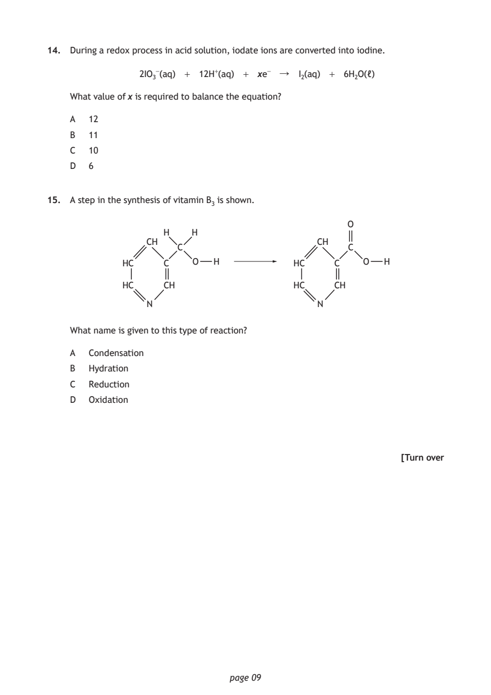
Selectable page text
14. During a redox process in acid solution, iodate ions are converted into iodine.
2IO₃⁻(aq) + 12H⁺(aq) + xe⁻ ↓ I₂(aq) + 6H₂O(ℓ)
What value of x is required to balance the equation?
A 12
B 11
C 10
D 6
15. A step in the synthesis of vitamin B₃ is shown.
O
H H
CH CH
C C
HC C O H HC C O H
HC CH HC CH
N N
What name is given to this type of reaction?
A Condensation
B Hydration
C Reduction
D Oxidation
[Turn over
page 09PDF page 10
Paper 1, Question 16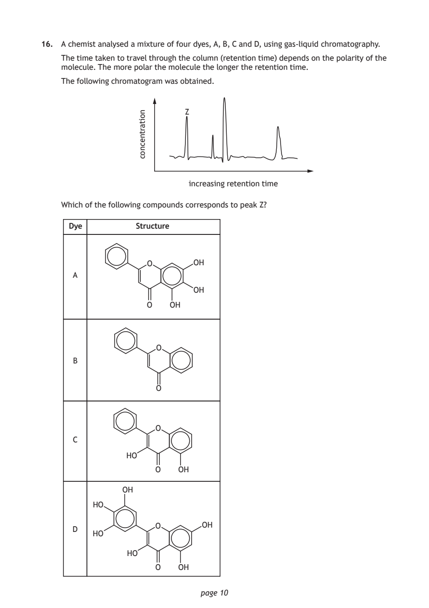
Selectable page text
16. A chemist analysed a mixture of four dyes, A, B, C and D, using gas-liquid chromatography.
The time taken to travel through the column (retention time) depends on the polarity of the
molecule. The more polar the molecule the longer the retention time.
The following chromatogram was obtained.
page 10
noitartnecnoc Z
increasing retention time
Which of the following compounds corresponds to peak Z?
Dye Structure
O OH
A
OH
O OH
O
B
O
O
C
HO
O OH
OH
HO
O OH
D
HO
HO
O OHPDF page 11
Paper 1, Question 17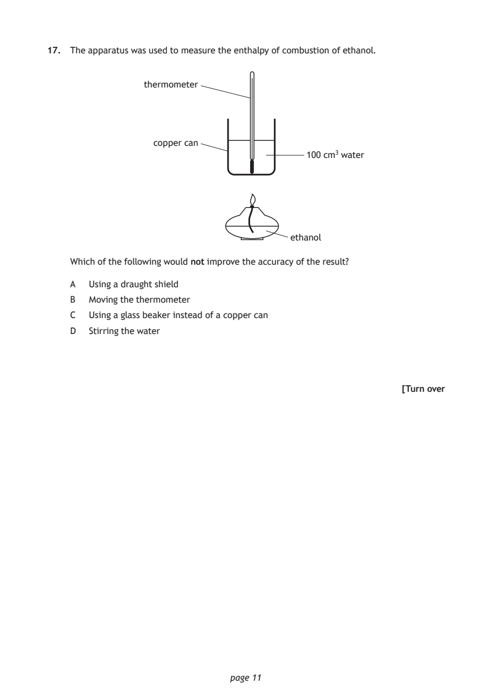
Selectable page text
17. The apparatus was used to measure the enthalpy of combustion of ethanol.
thermometer
copper can
100 cm³ water
ethanol
Which of the following would not improve the accuracy of the result?
A Using a draught shield
B Moving the thermometer
C Using a glass beaker instead of a copper can
D Stirring the water
[Turn over
page 11PDF page 12
Paper 1, Question 18Paper 1, Question 19Paper 1, Question 20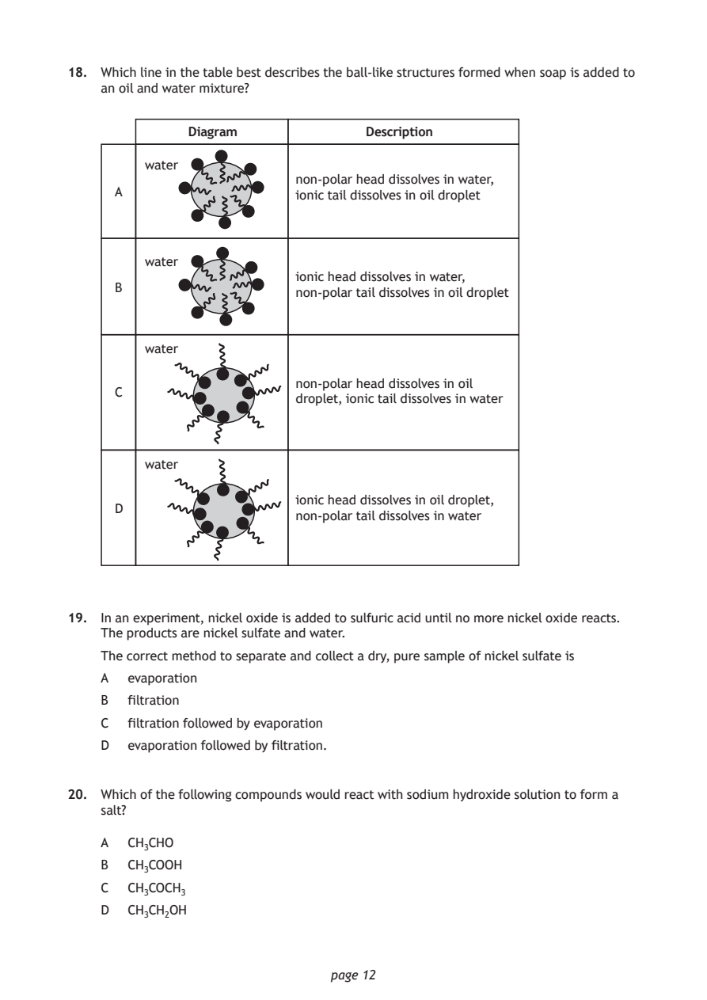
Selectable page text
18. Which line in the table best describes the ball-like structures formed when soap is added to
an oil and water mixture?
Diagram Description
water
non-polar head dissolves in water,
A ionic tail dissolves in oil droplet
water
ionic head dissolves in water,
B
non-polar tail dissolves in oil droplet
water
non-polar head dissolves in oil
C
droplet, ionic tail dissolves in water
water
ionic head dissolves in oil droplet,
D
non-polar tail dissolves in water
19. In an experiment, nickel oxide is added to sulfuric acid until no more nickel oxide reacts.
The products are nickel sulfate and water.
The correct method to separate and collect a dry, pure sample of nickel sulfate is
A evaporation
B filtration
C filtration followed by evaporation
D evaporation followed by filtration.
20. Which of the following compounds would react with sodium hydroxide solution to form a
salt?
A CH₃CHO
B CH₃COOH
C CH₃COCH₃
D CH₃CH₂OH
page 12PDF page 13
Paper 1, Question 21Paper 1, Question 22Paper 1, Question 23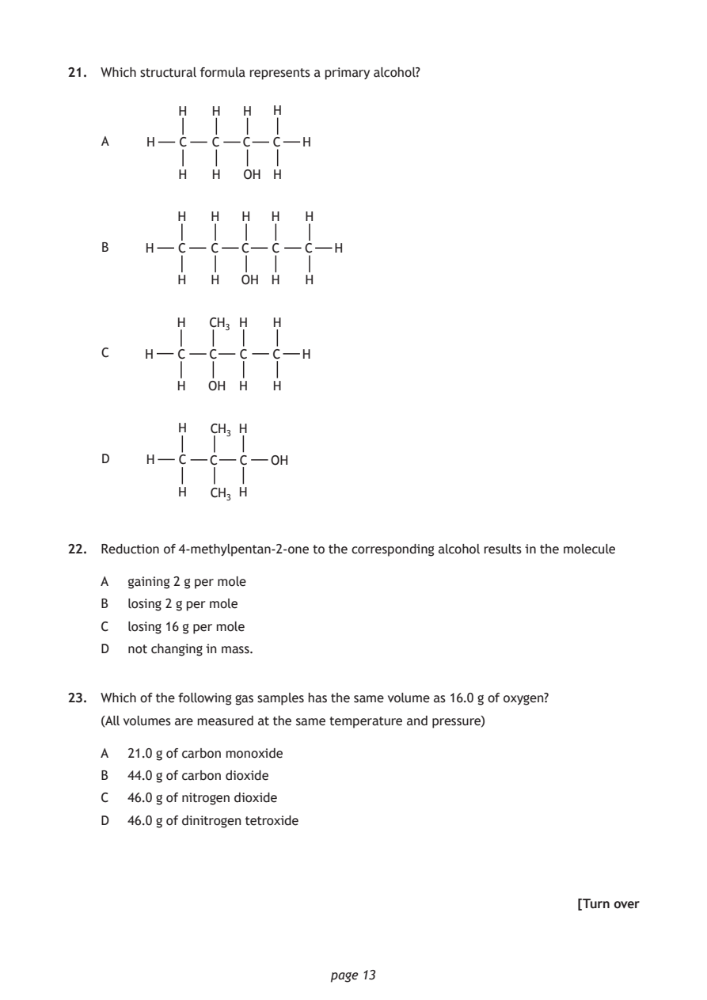
Selectable page text
21. Which structural formula represents a primary alcohol?
H H H H
A H C C C C H
H H OH H
H H H H H
B H C C C C C H
H H OH H H
H CH₃ H H
C H C C C C H
H OH H H
H CH₃ H
D H C C C OH
H CH₃ H
22. Reduction of 4-methylpentan-2-one to the corresponding alcohol results in the molecule
A gaining 2 g per mole
B losing 2 g per mole
C losing 16 g per mole
D not changing in mass.
23. Which of the following gas samples has the same volume as 16.0 g of oxygen?
(All volumes are measured at the same temperature and pressure)
A 21.0 g of carbon monoxide
B 44.0 g of carbon dioxide
C 46.0 g of nitrogen dioxide
D 46.0 g of dinitrogen tetroxide
[Turn over
page 13PDF page 14
Paper 1, Question 24Paper 1, Question 25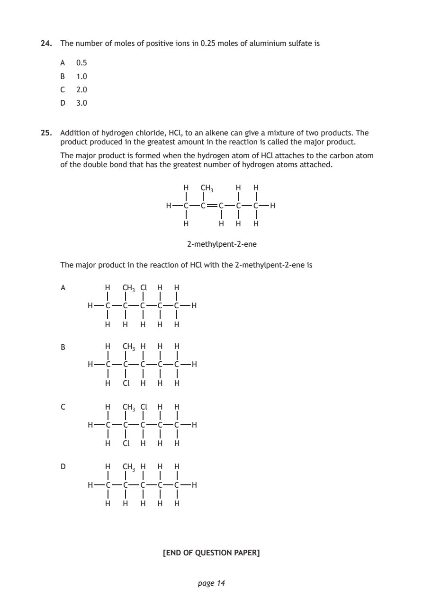
Selectable page text
24. The number of moles of positive ions in 0.25 moles of aluminium sulfate is
A 0.5
B 1.0
C 2.0
D 3.0
25. Addition of hydrogen chloride, HCl, to an alkene can give a mixture of two products. The
product produced in the greatest amount in the reaction is called the major product.
The major product is formed when the hydrogen atom of HCl attaches to the carbon atom
of the double bond that has the greatest number of hydrogen atoms attached.
H CH₃ H H
H C C C C C H
H H H H
2-methylpent-2-ene
The major product in the reaction of HCl with the 2-methylpent-2-ene is
A H CH₃ Cl H H
H C C C C C H
H H H H H
B H CH₃ H H H
H C C C C C H
H Cl H H H
C H CH₃ Cl H H
H C C C C C H
H Cl H H H
D H CH₃ H H H
H C C C C C H
H H H H H
[END OF QUESTION PAPER]
page 14PDF page 15

Selectable page text
SPACE FOR ROUGH WORK
page 15PDF page 16

Selectable page text
[BLANK PAGE]
DO NOT WRITE ON THIS PAGE
page 16